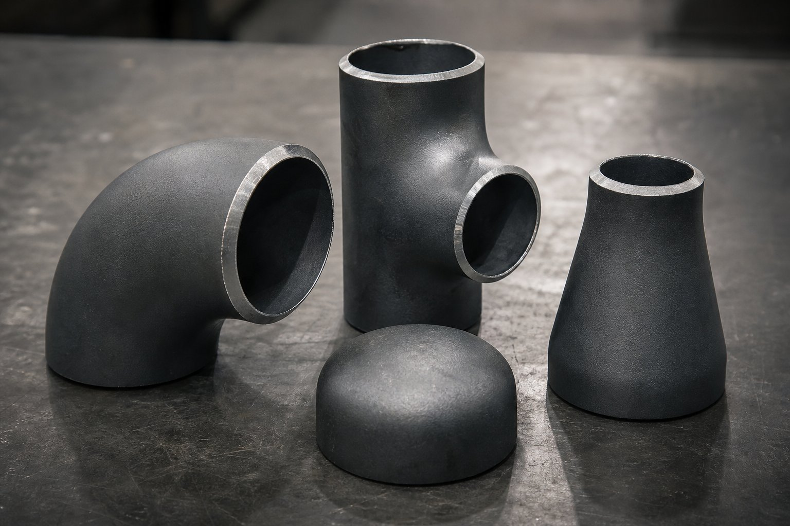

جایگاه این متریال
وقتی در خطوط فرایندی از اتصالات جوشی کربنی صحبت میشود، در اکثر موارد متریال این استاندارد مد نظر است. این متریال همخانواده لوله کربنی دمای بالا است و خواص مکانیکی و جوشپذیری متناسب با خطوط عمومی را فراهم میکند.

خواص مکانیکی و ساخت
| خاصیت | مقدار مشخصه |
|---|---|
| حداقل استحکام کششی | حدود ۴۱۵ مگاپاسکال |
| بازه استحکام | تا حدود ۵۸۵ مگاپاسکال |
| روش ساخت | شکلدهی از لوله یا ورق، با یا بدون جوش |
| عملیات حرارتی | بسته به فرآیند ساخت و الزامات |
| حک روی قطعه | نماد متریال، شماره ذوب و نشان سازنده |
خانواده گریدها
این استاندارد علاوه بر گرید رایج کربنی، گریدهایی برای دمای پایین و دمای بالا نیز دارد. انتخاب گرید باید دقیقاً با شرایط سرویس هماهنگ باشد:
- گرید کربنی رایج برای خطوط عمومی دمای محیط و بالا.
- گریدهای دمای پایین با تست ضربه برای سرویسهای زیر صفر.
- گریدهای دمای بالا برای خطوط داغ.
- گریدهای آلیاژی برای سرویسهای خاصتر.
بازرسی و کنترل کیفیت
- کنترل ابعاد مطابق استاندارد ابعادی اتصالات.
- اندازهگیری ضخامت در نقاط بحرانی.
- بررسی حک و تطابق آن با گواهی مواد.
- بازرسی چشمی سطح و پخها.
- در سفارشهای حساس، تست غیرمخرب تکمیلی.
نکات خرید
- نوع اتصال، سایز و ضخامت را دقیق ذکر کنید.
- گرید متناسب با دمای طراحی انتخاب کنید.
- گواهی مواد با شماره ذوب درخواست کنید.
- برای سرویس ترش یا دمای پایین، الزامات تکمیلی را قید کنید.
- بستهبندی و حفاظت پخها را در قرارداد ذکر کنید.
تطابق با لوله و فلنج
اتصال، حلقه واسط بین شاخههای لوله و سایر تجهیزات است. برای یکپارچگی خط:
| جزء خط | متریال همخوان رایج |
|---|---|
| لوله فرایندی کربنی | لوله کربنی دمای بالا |
| اتصال جوشی | گرید کربنی رایج این استاندارد |
| فلنج کربنی | فورج کربنی دمای محیط |
| پیچ و مهره | آلیاژ متناسب با کلاس و دما |
هرگونه تفاوت متریال باید در طراحی ارزیابی و مستند شود.
عیوب رایج و پیشگیری
- نازکی دیواره در پشت زانو: کنترل ضخامت در بازرسی.
- بیضوی انتهای اتصال: کنترل برای مونتاژ بدون تنش.
- آسیب پخ در حمل: استفاده از محافظ و بستهبندی مناسب.
- حک ناخوانا: درخواست حک واضح و تطابق با گواهی.
تحویل و انبارش
اتصالات در زمان تحویل باید از نظر حک، ابعاد و سلامت پخ کنترل و در انبار با تفکیک متریال و سایز نگهداری شوند. اختلاط اتصالات کربنی با استنلس یا دمای پایین در انبار، ریسک نصب اشتباه در سایت را به همراه دارد؛ برچسبگذاری و قفسهبندی مناسب، هزینه کمی است که از توقف پروژه جلوگیری میکند.
تطبیق در زنجیره اقلام و اشتباههای رایج
اتصالات (WPB) در یک زنجیره سهگانه با لوله و فلنجها قرار میگیرند و کیفیت نهایی خط، به هماهنگی هر سه جزء وابسته است. رایجترین اشتباه، عدم تطابق مشخصه متریال بین این اجزاست؛ برای مثال اتصال با مشخصه متفاوت از لوله مجاور یا فلنجی با گرید متریالی دیگر. این ناهماهنگیها ممکن است در ظاهر کار کنند اما در بازرسیها به عنوان عدم انطباق ثبت میشوند و در ارزیابیهای عمر آینده، نقطه ضعف محسوب میگردند. اشتباه دوم، اختلاف ابعادی پنهان است: ضخامت دیواره اتصال باید با رده لوله هماهنگ باشد تا در جوشکاری، هممحوری و گذار مناسب ایجاد شود؛ اتصال نازکتر از لوله، هم تمرکز تنش ایجاد میکند و هم در تستهای ضخامت آینده دردسرساز میشود. سوم، مساله آمادهسازی لبههاست: پخهای غیراستاندارد یا لبههای آسیبدیده در اتصالات، کیفیت ریشه جوش را تحت تاثیر قرار میدهند و باید در بازرسی ورودی کنترل شوند. چهارم، اختلاط سازندگان مختلف در یک خط است که اگرچه ذاتا ممنوع نیست، اما مدیریت مدارک و ردیابی آن را دشوار میکند و بهتر است در یک جبهه کاری، از یک منبع استفاده شود. در خرید نیز چند نکته عملی اهمیت دارد: درخواست گواهی متریال برای هر محموله، کنترل نشانهگذاری و تطبیق آن با مدارک قبل از تخلیه و بازرسی نمونهای ابعاد در سفارشهای بزرگ. برای پروژههایی با الزامات خاص مانند سرویس ترش یا دمای پایین، باید نسخه مناسب گرید با الزامات تکمیلی درخواست شود و به فرض کفایت (WPB) عمومی اکتفا نگردد.
جمعبندی
متریال اتصالات کربنی، انتخاب پیشفرض و اقتصادی خطوط فرایندی است؛ به شرط تطابق با لوله، گواهی مواد معتبر و بازرسی دقیق در تحویل.
سوالات رایج
این متریال با کدام لوله همخوان است؟
با لوله کربنی دمای بالا همخانواده است و برای خطوط فرایندی عمومی انتخاب میشود. همخوانی متریال لوله و اتصال، یکپارچگی رفتار مکانیکی و جوشپذیری مطمئن را تضمین میکند.
اتصالات از چه روشی ساخته میشوند؟
بسته به سایز و ضخامت، از لوله یا ورق با فرآیندهای شکلدهی گرم یا سرد ساخته و در صورت نیاز عملیات حرارتی میشوند. اتصالات کوچک معمولاً بدون درز و اتصالات بزرگ با جوش کنترلشده تولید میشوند.
حک روی اتصال چه اطلاعاتی دارد؟
نماد استاندارد، متریال، شماره ذوب و نام یا نشان سازنده. این حک، مبنای ردیابی و تطابق با گواهی مواد در بازرسی است.
برای سرویس دمای پایین چه متریالی لازم است؟
متریال مخصوص دمای پایین با تست ضربه. استفاده از اتصال کربنی معمولی در خطوط برودتی جایز نیست و باید در استعلام ذکر شود.
مطالب مرتبط
- راهنمای اتصالات جوشی لببهلب (ASME B16.9)
- راهنمای جامع لوله مانیسمان
- راهنمای لوله کربنی دمای بالا
- راهنمای کامل گواهی مواد و تست
- راهنمای اتصالات فیتینگ پایپینگ
در استعلام، نوع اتصال، سایز، ضخامت و گواهی مواد را مشخص کنید. برای سرویسهای خاص مانند دمای پایین یا ترش، شرایط سرویس را ذکر کنید.
مشاهده صفحه محصول ← ثبت RFQ همین محصولتامین این تجهیزات را به پیشرو تجهیز فرتاک بسپارید
شرکت پیشرو تجهیز فرتاک تامینکننده تخصصی تجهیزات صنعتی برای پروژههای نفت، گاز، پتروشیمی، فولاد و نیروگاهی است. برای دریافت پیشنهاد فنی و قیمت، استعلام (RFQ) خود را ثبت کنید تا کارشناسان مهندسی فروش در کوتاهترین زمان پاسخ دهند.
- تامین اتصالات پایپینگزانو، سهراهی و تبدیل با گواهی مواد
- تامین تجهیزات پایپینگلوله و فلنج هماهنگ با اتصالات